個室でゆっくり、
浜焼き牡蠣と旬の肴を。
常連が通う、浜焼き牡蠣の店。茨城県古河市関戸、個室完備の海鮮居酒屋「玖 -kyu-」。仕入れにこだわった鮮度抜群の牡蠣と旬の海鮮、こだわりの銘酒を、静かな和の空間で。宴会からデート、女子会、おひとり様まで。
営業時間 11:00〜14:00（L.O.13:30）／ 17:00〜翌0:00（L.O.23:00） 定休日 火曜日
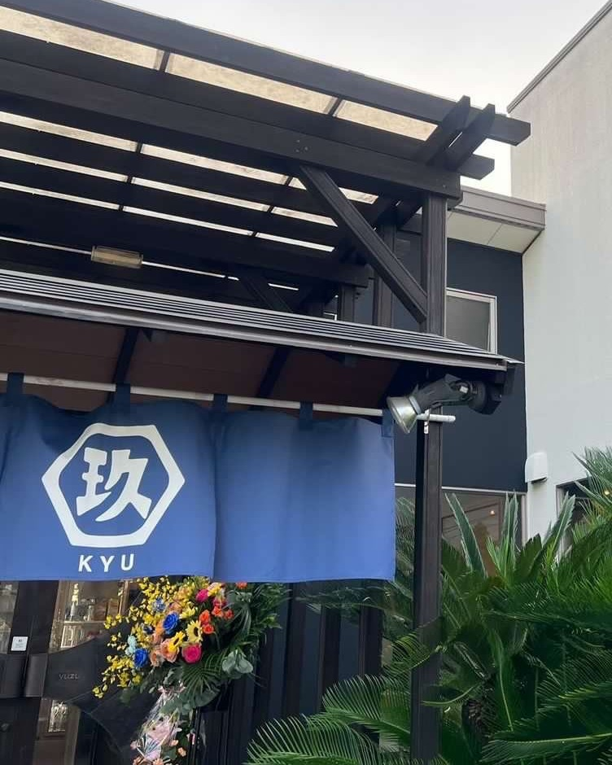
紺のれんが目印です古河で味わう、
鮮度と炭火。
魚市場から届く旬の魚介、炭火で焼き上げる牡蠣、全国から選び抜いた銘酒。派手さよりも、素材そのものの味を静かに引き立てる。それが「玖」の流儀です。
仕入れにこだわった鮮度抜群の牡蠣と、
旬の海鮮、こだわりの銘酒を。
個室で過ごす、静かな宴の時間。
仕入れへのこだわり
その日仕入れた鮮度の良い牡蠣・海鮮を、余計な手を加えず素材の味で。
炭火で仕上げる
牡蠣小屋コースは炭火焼き。濃厚な旨味を熱々のまま召し上がっていただけます。
海鮮×銘酒
茨城・新潟・山形・宮城など全国の銘酒を、海鮮の肴とともに上質にお楽しみいただけます。
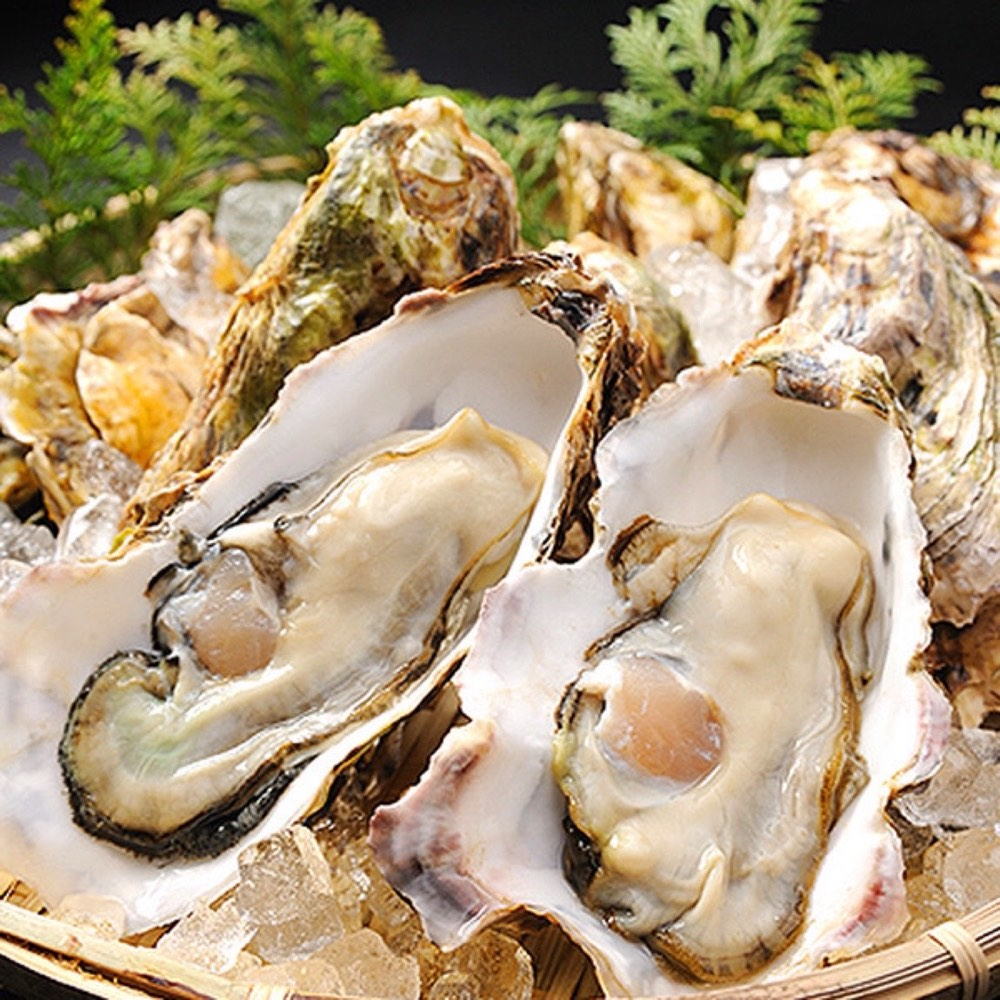
生牡蠣盛り合わせ（時価）看板は、牡蠣。
「仕入れにこだわった鮮度抜群の牡蠣がオススメ」——それが「玖」の一番の自慢です。炭火で焼き上げる牡蠣小屋コースから、桶に映える生牡蠣盛り合わせまで。
牡蠣小屋コース（浜焼き）
炭火で焼き上げる牡蠣の濃厚な旨味と、弾けるエビの甘み。個室でじっくりお楽しみいただけます。
生牡蠣盛り合わせ
その日仕入れた大ぶりの牡蠣を、桶スタイルで見た目も華やかに。その日の仕入れによる時価です。おすすめの盛り合わせをスタッフがご案内しますので、お気軽にお申し付けください。
「こんなに大きい牡蠣を食べたことがありません！最高です！」
お客様の口コミより銘酒
海鮮の肴に合わせて、全国から選び抜いた日本酒・焼酎・果実酒を取り揃えています。
Also Available
焼酎・サワー・梅酒・生ビールなども豊富にご用意しております。銘柄は仕入れにより入れ替わりますので、詳しくは当日のお品書きにてご確認ください。
宴会・コース
歓送迎会や女子会、記念日まで。ご予算とご人数に合わせてお選びいただけます。
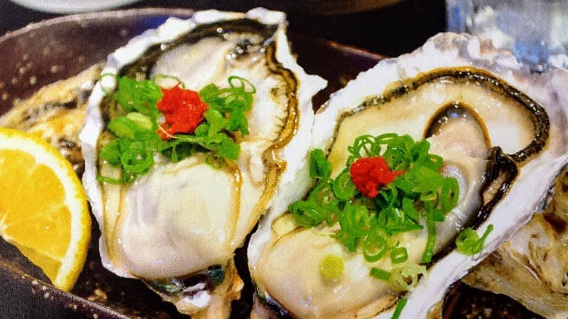
牡蠣コース
浜焼き・熱々牡蠣鍋・フライ・天ぷらなど、牡蠣尽くしでお楽しみいただけるコース。生ビールOKプランは7,000円。
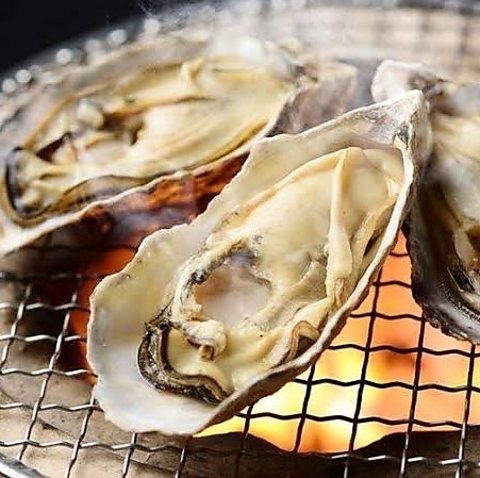
牡蠣小屋コース
炭火で焼き上げる浜焼き牡蠣の濃厚な旨味と、弾けるエビの甘みを。料理のみのプランです。
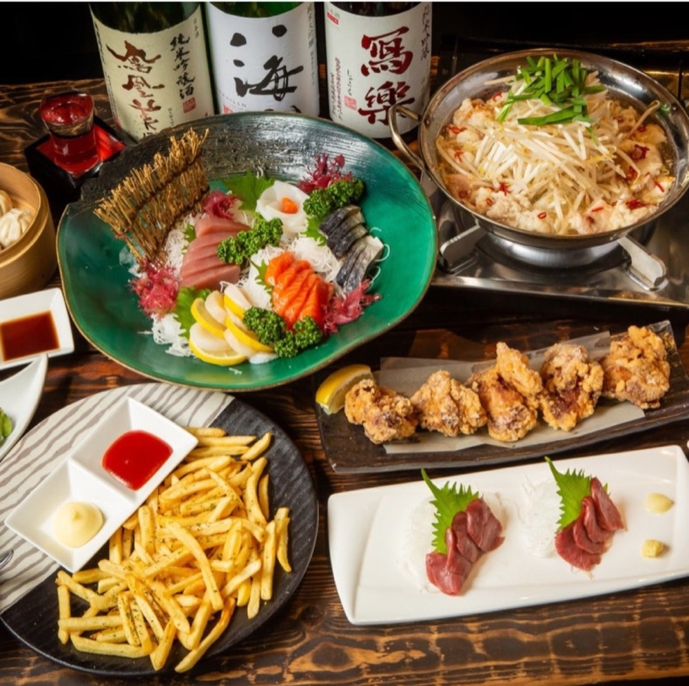
松コース
海鮮と逸品、銘酒を飲み放題付きでゆったりと。品数多めで宴会の定番コースです。

竹コース
気軽な宴会・二次会にちょうど良いボリュームのコースです。飲み放題付き（4,500円）もご用意。
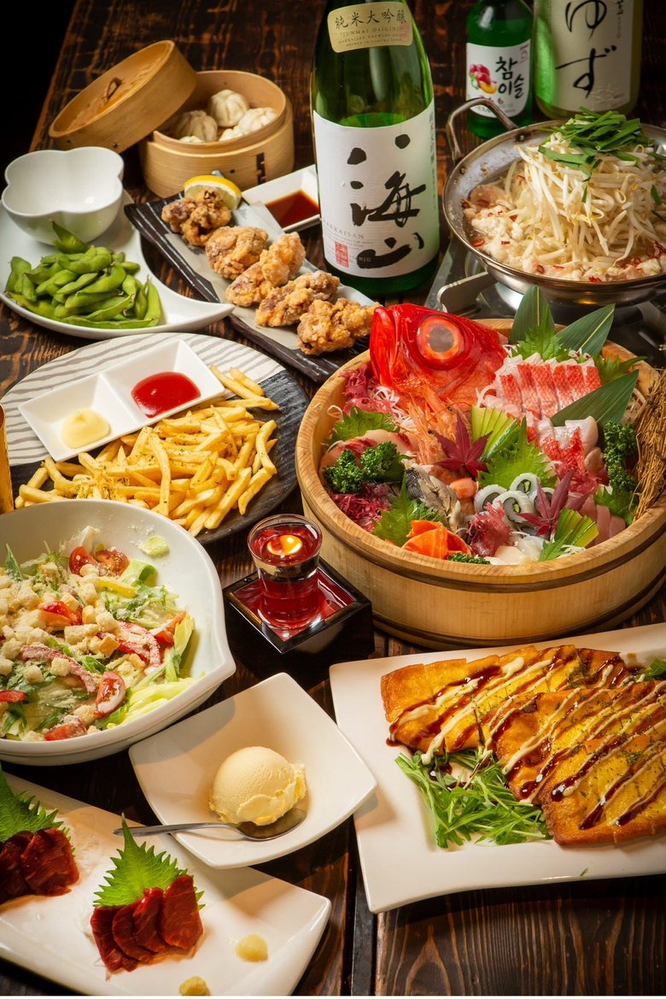
女子会コース
女子会やデートにも。見た目も華やかな一皿を揃えたコースです。ビール付+500円・アイスうどん+500円。

貸切コース（竹）
15人3組限定、または50人以上1組限定の貸切プラン。松コース（6,500円）での貸切も承ります。
コース内容は仕入れ状況・ご人数により変動する場合がございます。最大88名までの貸切・カラオケ個室もご用意。幹事様のご相談歓迎、人数・ご予算に合わせてコースを調整いたします。10名以上の宴会・貸切はネット予約の備考欄からお気軽にどうぞ。
お車でのご来店も安心。50台分の無料駐車場を完備しておりますので、大人数の宴会でも全員お停めいただけます。
空間
個室・座敷・カウンター・ソファー席・カラオケ個室。シーンに合わせてお選びいただけます。
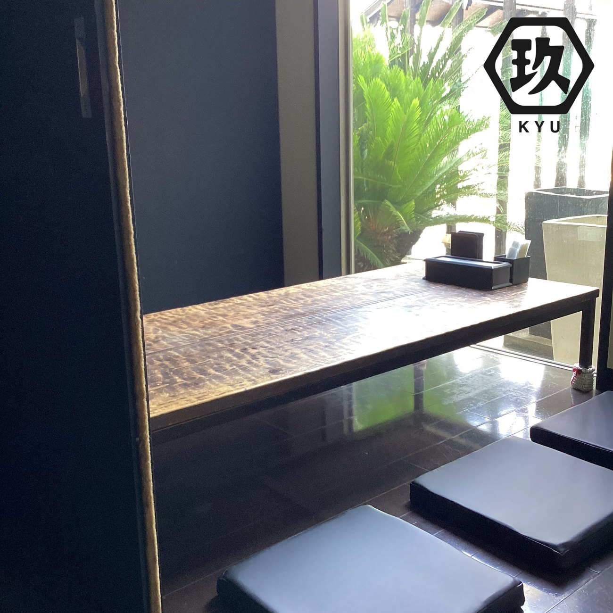
完全個室
1〜40名まで幅広く対応する完全個室。10〜20名規模の歓送迎会にちょうど良い個室から、最大30〜40名までの宴会個室までご用意しています。
「大切な宴を、静かな個室で。」
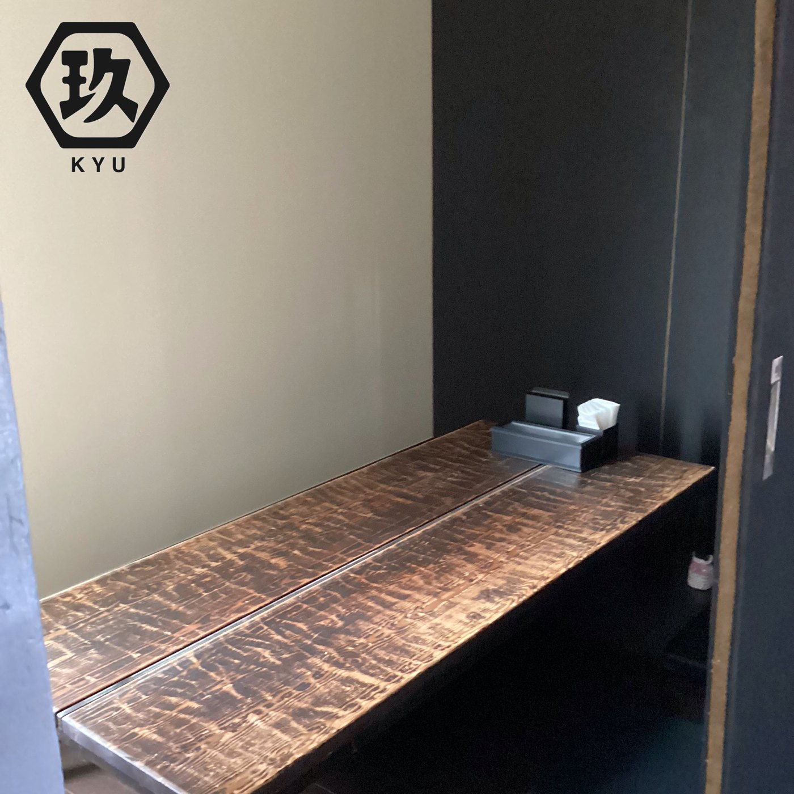
座敷・ソファー席
足を伸ばせる座敷と、くつろげるソファー席をご用意。座敷席なので、お子様連れのご家族もゆったりとお過ごしいただけます。
「家族や大切な人と、足を伸ばして。」
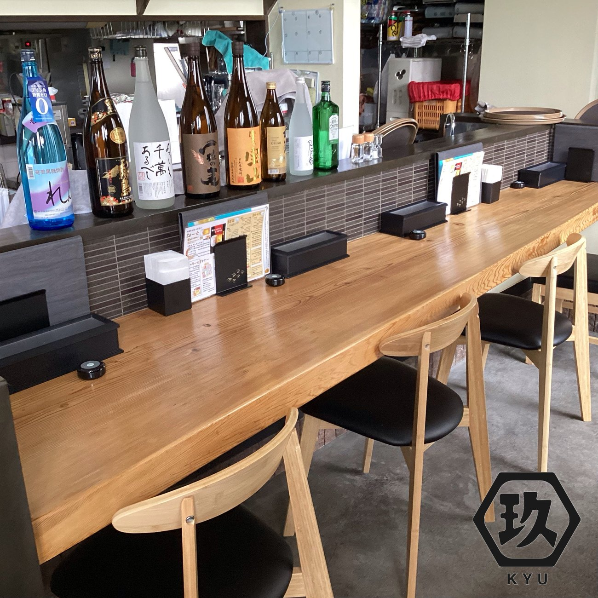
カウンター4席
おひとり様や少人数でふらりと立ち寄れるカウンター席もご用意しています。
「仕事帰りにふらりと一杯。」
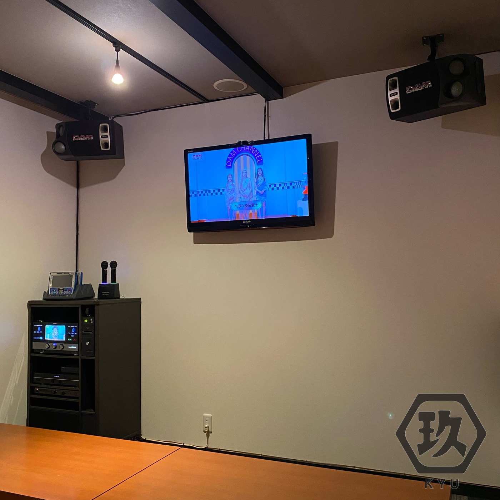
カラオケ個室
盛り上がる二次会にぴったりのカラオケ付き個室。宴の締めくくりに。
「宴の締めくくりに、盛り上がる二次会を。」
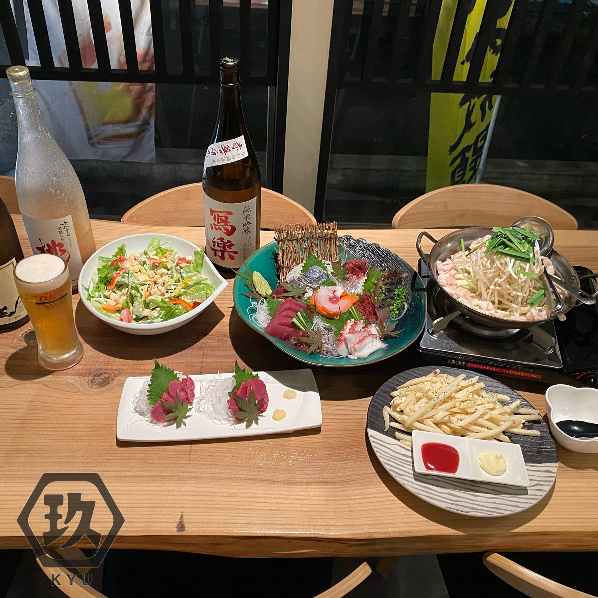
賑やかな乾杯から、静かな余韻まで。
初めてのデートなら、お一人3,000〜4,000円前後のコースからでも十分お楽しみいただけます。女子会コース（3,500円）も、ご予算の目安としてご活用ください。
店舗情報
| 店名 | 海鮮居酒屋 玖 -kyu- |
|---|---|
| 住所 | 茨城県古河市関戸1212-1 |
| アクセス | JR宇都宮線 古河駅より車で約15分駐車場50台完備 |
| 営業時間 | 11:00〜14:00（料理L.O.13:30） 17:00〜翌0:00（料理L.O.23:00） |
| 定休日 | 火曜日 |
| お席 | 50席（最大宴会88名）完全個室（最大30〜40名）・座敷・カウンター4席・ソファー席・カラオケ個室 |
| 設備 | 完全個室・カラオケ個室・座敷・カウンター・ソファー席 |
| ご予約 | ネット予約はこちら（24時間受付） 宴会・貸切のご相談も、ネット予約の備考欄からお気軽にどうぞ。 お電話でのご予約はこちら（0280-33-7914） 宴会・貸切のご相談は、お電話のほうが早くご案内できます。 |
| お支払い |